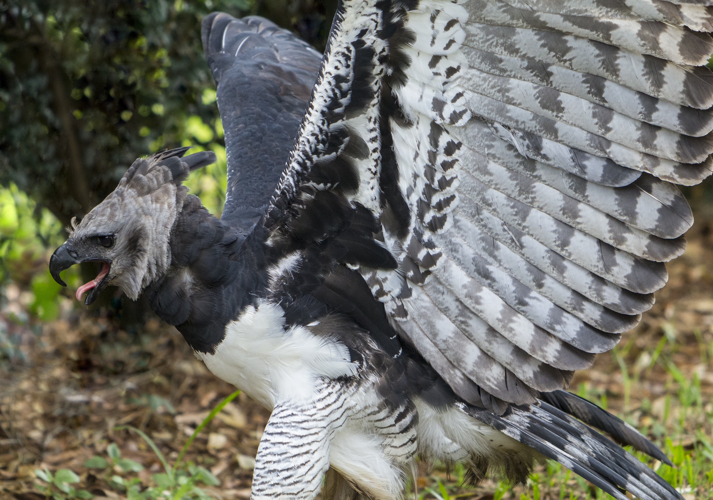
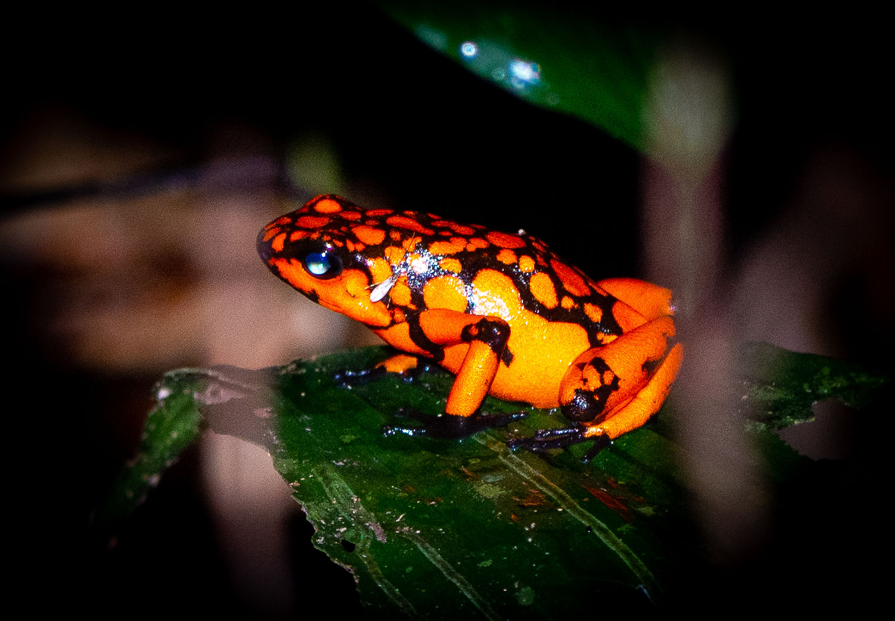
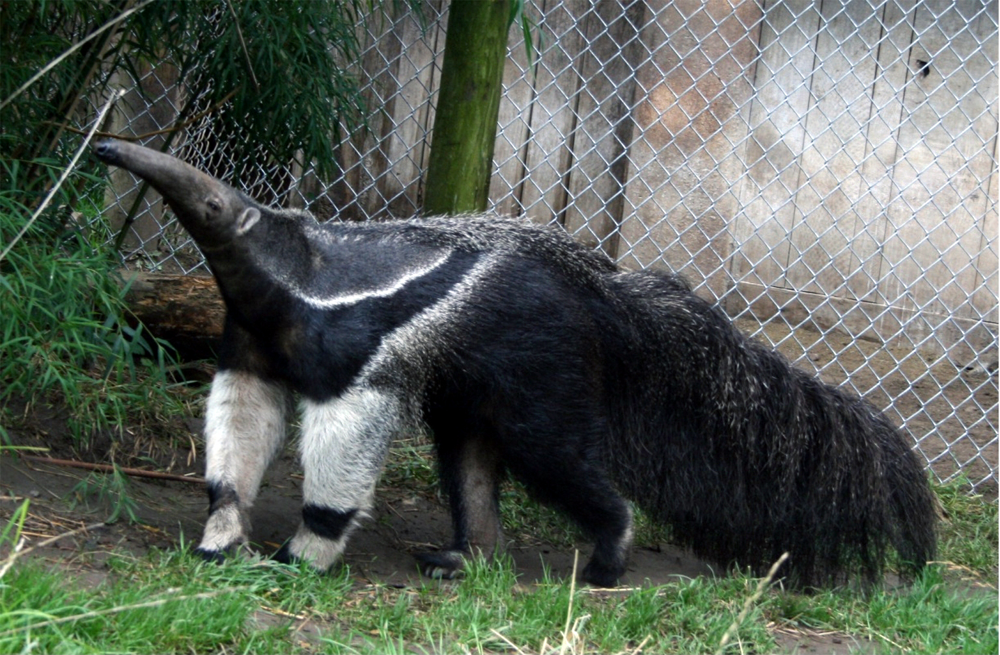

VENEZUELA'S FOREST WILDLIFE
JAGUAR

The Jaguar is the largest big cat in the Americas and the apex predator of Venezuela's tropical forests. Powerful and stealthy, it hunts everything from caimans to deer. Its coat comes in two forms — the classic golden-spotted pattern and a rare melanistic black variant where the rosettes are still visible under the dark fur. Cubs are born with their spots already present, developing into formidable hunters over their first two years of life.
HARPY EAGLE

The Harpy Eagle is one of the world's largest and most powerful birds of prey, reigning over Venezuela's forest canopy. With talons the size of a bear's claws, it snatches monkeys and sloths directly from the treetops. Fledglings are covered in white down before developing the dramatic grey-and-black plumage of the adult. In flight, its broad wingspan and swift agility through dense forest make it one of nature's most awe-inspiring aerial hunters.
POISON DART FROG

Poison Dart Frogs are among the most brilliantly colored and toxic creatures in Venezuela's rainforests. Their vivid hues — ranging from electric blue to bold red-and-black to striking yellow-and-green — serve as a warning to predators of the powerful toxins stored in their skin. Despite their lethal reputation, these tiny frogs are fascinating to observe, often seen darting across the forest floor in search of insects among the leaf litter.
GIANT ANTEATER

The Giant Anteater is one of Venezuela's most distinctive and prehistoric-looking mammals. With its elongated snout, massive bushy tail, and powerful claws capable of tearing open concrete-hard termite mounds, it is perfectly engineered for its diet of ants and termites. Pups ride on their mother's back for up to a year, their coat pattern aligning perfectly with hers as camouflage. When resting, the anteater wraps its enormous tail around its body like a blanket.